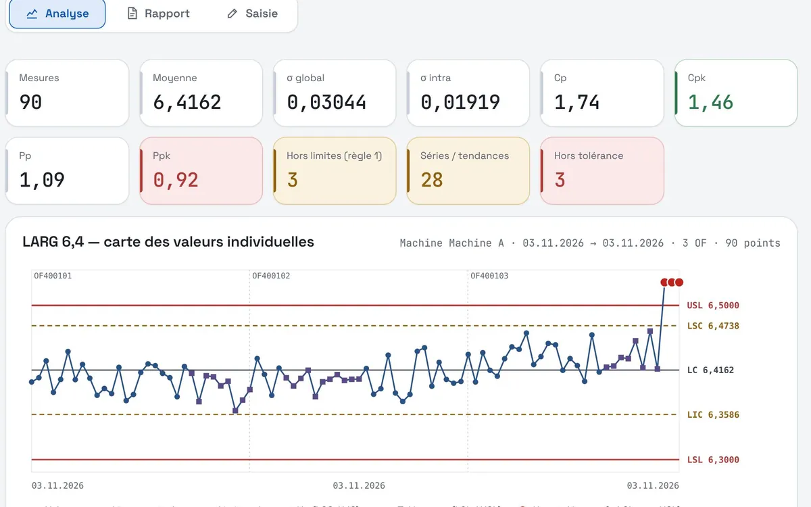
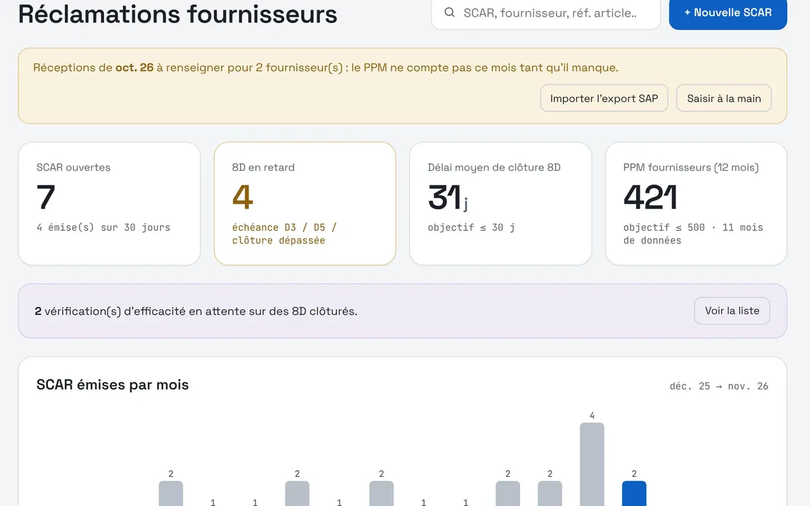
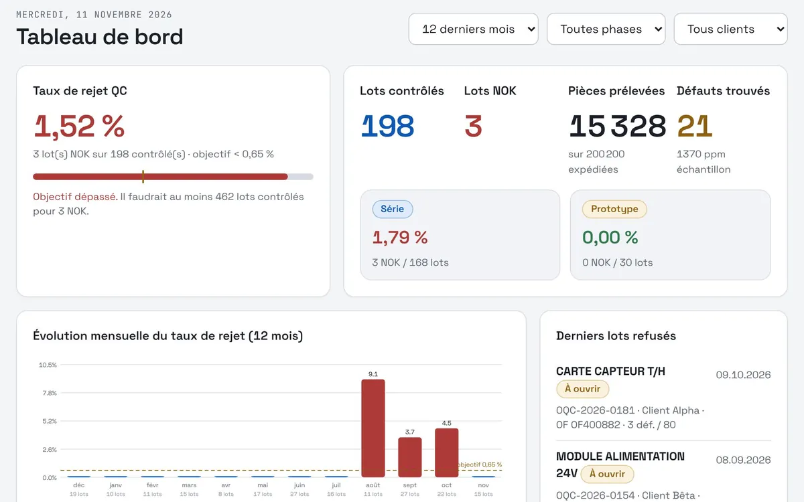
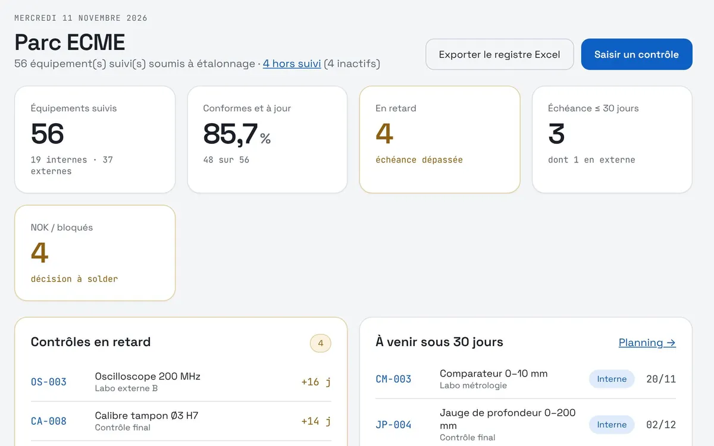
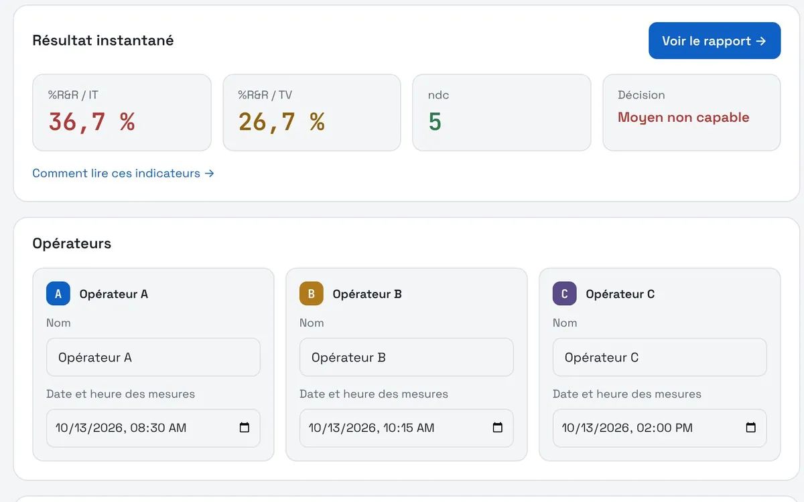

Yassine Kaabar
Ingénieur Qualité · Résolution de problèmes & amélioration continue · Zéro défaut
Plus de 5 ans dans l'électronique de haute précision, certifiée ISO 9001 et ISO 13485. Je conçois aussi mes propres outils qualité.

Expérience
-
Oct. 2022 – aujourd'huiDelémont, Suisse
Ingénieur Qualité · qualité clients et fournisseurs
ml&s Suisse SA · fabricant d'électronique de précision, ISO 9001 et ISO 13485
- Lancements produits : 13 nouveaux produits industrialisés selon l'APQP (AMDEC, QI/QO/QP, MSA, capabilité, PPAP ou FAI) ; 4 des 6 produits à volume significatif sans aucune réclamation client en 4 ans.
- Fournisseurs : pilotage de 40 fournisseurs (PCB, composants, mécanique, consommables de procédé), −30 % de réclamations en 3 ans ; procédure d'homologation, 2 à 3 audits par an ; nouveau fournisseur de PCB céramique : de 6 réclamations par an à 0 en 3 ans.
- Procédés : rendement d'un produit Chip-on-Board de haute complexité porté de 89 % à 98 % par une SPC automatisée ; rebut au fraisage ramené de 17,3 % à 0 % en 7 mois.
- Résolution de problèmes : mise en place de la démarche QRQC en 2025 ; 8D, 5 pourquoi, Ishikawa (5M), AMDEC, analyses physiques (rayons X, microscopie, micro-section).
Voir le détail (5 autres réalisations)
- Clients : interlocuteur qualité, réclamations et plans d'actions, audits clients, suivi des PPM et Pareto des défauts.
- Plans d'expériences : référent pour le réglage des paramètres machine en phase prototype.
- Coûts de non-qualité : calculés à partir d'outils de suivi développés en interne (réclamations, contrôle OQC, rebuts) ; revue hebdomadaire animée avec les responsables d'atelier.
- Digitalisation : temps de traitement des réclamations réduit de 50 % (Power Automate, Power BI, Power Apps).
- Système qualité : auditeur interne ISO 9001 et ISO 13485, référent REACH, RoHS et CMRT.
-
Fév. 2021 – oct. 2022Ribeauvillé, France
Ingénieur Qualité et HSE · alternance
Cordon CMS · sous-traitance électronique (EMS)
- Projet croisant données de production et moyens de contrôle pour une stratégie qualité préventive.
- Auditeur interne ; préparation des audits clients et de certification ISO 9001 et ISO 14001 ; documentation ISO 9001, 14001 et 45001.
- Visites sécurité, formations QSE et CSSCT ; contribution à la politique RSE du groupe.
-
2026Projet personnel
Qyklo · logiciel de pilotage du système qualité
Conçu à partir de mon expérience terrain, développé en Python avec l'aide de l'IA, sur mon temps libre, sans aucun lien avec mon employeur
Formation
- Mastère Spécialisé® Management Qualité, Sécurité et EnvironnementCESI, Strasbourg · 2021 – 2022
- Master Sécurité et EnvironnementUniversité de Haute-Alsace, Mulhouse · 2019 – 2021
- Licence Environnement, Hygiène et SécuritéUniversité de Haute-Alsace, Mulhouse · 2018 – 2019
- DUT ChimieIUT d'Illkirch · 2016 – 2018
Langues
- Françaislangue maternelle
- Anglaiscourant professionnel · TOEIC 985/990
- Arabe marocaincourant
- Allemandnotions
Compétences
- Outils qualité
- QRQC, 8D, 5 pourquoi, Ishikawa (5M), AMDEC, SPC, MSA, capabilité (Cp, Cpk), plans d'expériences, coûts de non-qualité, PPM, Pareto, APQP, PPAP, FAI, QI/QO/QP, analyse de défaillance
- Normes et réglementation
- ISO 9001, ISO 13485, ISO 14001, ISO 45001, IPC-A-610 (Certified IPC Specialist), REACH, RoHS, CMRT ; auditeur interne
- Métrologie
- Programmation et exploitation de la MMT Zeiss O-Inspect et du Keyence IM
- Data et outils
- SAP, Power BI, Power Automate, Power Apps, MS Office, Python et SQL (débutant)
En dehors du travail
Bénévole dans une association caritative · CrossFit · Rugby
Qyklo, le système qualité complet
Après les mini-apps, l'outil complet : Qyklo pilote tout le système de management de la qualité, ISO 9001 et ISO 13485, à la place des fichiers Excel dispersés. Il reprend le cœur des mini-apps et y ajoute tout le reste, organisé selon le cycle PDCA.
Projet personnel, développé sur mon temps libre, sans aucun lien avec mon employeur · qyklo.com
- Plan
- Politique, objectifs, KPI, revues, risques
- Do
- Alertes et rebuts à la tablette, audits terrain, dérogations
- Check
- Audits, analyses, capabilité, métrologie
- Act
- Réclamations client, 8D, SCAR, actions correctives
Des outils nés du terrain
Chaque application remplace une tâche que je faisais à la main. Elles tiennent chacune dans un seul fichier, s'ouvrent dans le navigateur et enregistrent les données dans un dossier partagé : rien à installer, aucun serveur.

SPC
Cartes de contrôle et capabilités à partir des mesures machine, écran opérateur avec arrêt production.

SCAR et 8D
Réclamations fournisseurs, suivi des 8D étape par étape, PPM et évaluation fournisseurs.

OQC
Contrôle final par lot selon l'ISO 2859-1, taux de rejet, non-conformités.

ECME
Registre des équipements de mesure, échéances d'étalonnage, planning.

Gage R&R
Étude MSA type 2 avec verdict instantané et guide de la méthode.
Essayez par vous-même
Deux calculs du quotidien d'un ingénieur qualité, en direct dans la page.
Un poste en qualité à pourvoir ?
Je vous présente volontiers ces outils plus en détail, code compris.